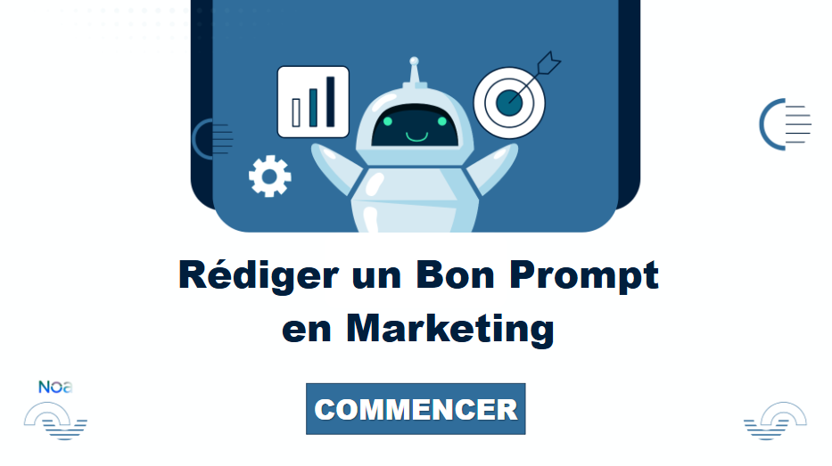

M2 Didactique de Langue et Ingénierie pédagogique
LinkedInPassionnée par l’e-learning, le design et l’évaluation formative, j’ai eu l’occasion d’enseigner, de travailler en communication et de concevoir des dispositifs de formation variés, ce qui m’a toujours poussée à approfondir mes connaissances. Au fil de mon parcours, j’ai développé des compétences en conception pédagogique, création graphique, digital learning et accompagnement des apprenants dans les formations en ligne, ainsi qu’en gestion de projet. Mes travaux m’ont également permis d’explorer la gamification et le storytelling, que j’intègre dans mes projets pour favoriser l’engagement et la motivation des apprenants.
Mes projets
START-e-FLE
Un parcours de FLE en ligne conçu pour les grands débutants. Il permet de développer les bases du français avant d’intégrer le cours hybride ou en présentiel au CUEF.
Rédiger un bon prompt en marketing
Ce module, conçu avec Articulate Storyline, s’adresse à des étudiants en Master Communication/Marketing (niveau B1/B2). Les activités interactives les guident vers la création d’un prompt clair, structuré et pertinent pour une tâche marketing, tout en renforçant leur vocabulaire professionnel en français.
TQuelGenre
TQuelGenre est un site ludique pour pratiquer les genres grammaticaux en français. Les jeux interactifs aident à maîtriser le masculin et le féminin.
Écotourisme en France
Une découverte du tourisme durable à travers des régions françaises. Les apprenants explorent des pratiques écologiques tout en enrichissant leur vocabulaire et leur culture.
Base de ressources MJC
Une base de données pédagogique conçue pour les animateurs. Elle propose des fiches pratiques, des outils numériques et des activités adaptées pour faciliter l’enseignement du FLE.
Mes compétences
 Conception pédagogique
Conception pédagogique
 Analyse et recherche
Analyse et recherche
 Design
Design
 Création de ressources pédagogiques
Création de ressources pédagogiques
 Gamification
Gamification
 Évaluation formative
Évaluation formative
 Marketing de la formation
Marketing de la formation
 Travail d'équipe
Travail d'équipe
Me contacter
📧 gnpaola17@gmail.com